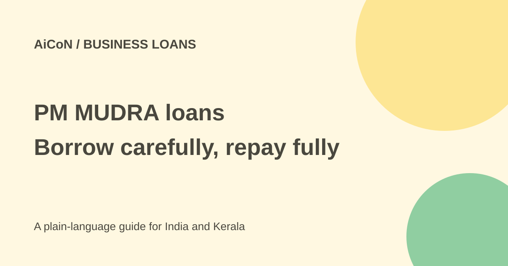

PM MUDRA loans: categories, Tarun Plus and safe application steps
PM MUDRA Yojana supports eligible micro businesses with loans from participating lenders. It is repayable credit, not a grant. The ₹20 lakh Tarun Plus ceiling is not a first-time loan entitlement.

What is the scheme?
Pradhan Mantri MUDRA Yojana helps eligible micro enterprises obtain institutional credit. The Department of Financial Services describes non-agricultural activities, including allied activities such as poultry, dairy and beekeeping. Term loans and working-capital needs can both be covered.
A term loan helps fund a planned business expense over time. Working capital helps with day-to-day costs. Both need repayment under the lender's agreement. A government-backed scheme does not mean every business will be approved.
Which category applies?
- Shishu: up to ₹50,000.
- Kishore: above ₹50,000 and up to ₹5 lakh.
- Tarun: above ₹5 lakh and up to ₹10 lakh.
- Tarun Plus: above ₹10 lakh and up to ₹20 lakh, for entrepreneurs who previously took and successfully repaid a Tarun-category loan.
The official page says collateral is not required. That does not remove credit checks, documents, repayment obligations or the lender's decision. Tarun Plus was added with effect from October 24, 2024; it is not the normal starting ceiling for a new borrower.
How to apply from Kerala or elsewhere in India
- Write down the business activity, the exact expense and how the business will repay the loan.
- Contact a participating bank, regional rural bank, small finance bank, NBFC or microfinance institution through its official branch or website.
- Ask which category fits. For Tarun Plus, ask how to document the successfully repaid earlier Tarun loan.
- Get the lender's current document checklist. Provide accurate identity, business and financial information through the official route.
- Check the amount, interest rate, fees, repayment schedule and any guarantee or insurance terms in writing.
- Read the sanction and loan agreement before accepting. Compare the instalment with realistic business income, including quiet months.
- Keep the application acknowledgement and all payment records. Ask the lender how to track the application and raise a complaint.
Cost and approval limits
No single interest rate or fee applies to every lender and borrower in this source check. A ₹5 lakh category ceiling does not mean you will receive ₹5 lakh. The lender assesses eligibility and the amount it can approve.
Do not borrow simply because the scheme is available. Compare the full repayment cost with your business need. The guide does not establish a free loan, waived interest or guaranteed approval.
Avoid middlemen
MUDRA's own website says it is a refinancing institution and does not lend directly to individual entrepreneurs. It warns that it has no agents or middlemen for obtaining MUDRA loans. Do not pay someone claiming they can guarantee approval in its name.
Never share an OTP, banking PIN or password with a supposed loan helper. Use the actual lender's official channels. A convincing WhatsApp poster is not a loan sanction.
What changed since the original post?
The category amounts and restricted Tarun Plus eligibility remain supported. This guide makes repayment, lender checks and the no-middleman warning clearer. No application was made and no personalised rate was obtained.
Frequently asked questions
Is it free government money?
No. It is a loan with repayment terms.
Can a first-time borrower automatically get ₹20 lakh?
No. Tarun Plus requires a successfully repaid earlier Tarun loan and lender approval.
Does MUDRA lend to me directly?
Its website says no. Apply through an eligible lender.
Sources: Current official scheme features · MUDRA official website and warning. Checked 7 October 2026.